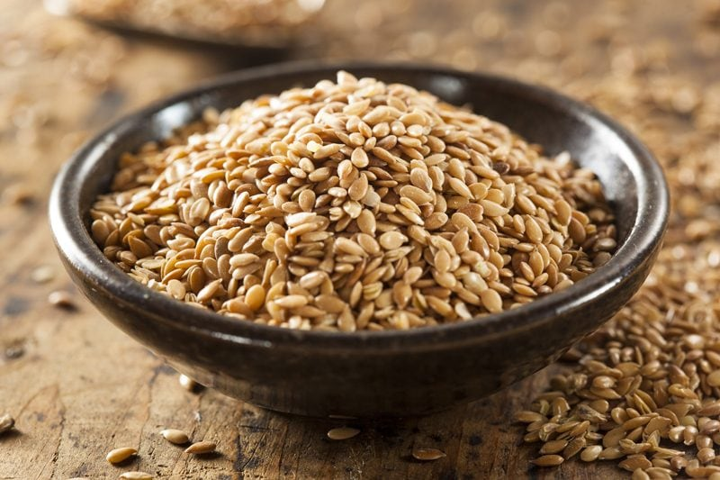

Flax Seeds | Ground and Soaked
Flax Seeds
Flax seeds… touted for their amazing nutrients, are also known as the “holy binder” of raw foods. So what makes them so magical when it comes to using them in recipes? For being such a tiny, itty bitty seed, it has an outer hull consisting of five layers.

The Wonders of Flax
The outermost layer, called the epiderm, contains the mucilaginous material that is activated in the presence of liquid. Give it a stir and a little time to relax and bam (!) you have a slimy material known as mucilage or gel.
Flax seeds contain both the soluble and insoluble types and can be very bulk-forming in the colon. This process can be a real blessing for those who suffer constipation, but it can also hinder movement when you don’t drink enough water with them.
Always Grind as Needed
To get the best bang for your buck in nutrition, grinding the seeds is the way to go. You can even just blitz them in a spice grinder, cracking the seeds… making it possible to benefit from the core nutrition of the seed.
There is some benefit to just soaking the seeds in water and obtaining the mucilage. That mucilage is known to help to prevent toxic build-up in the bowel during fasting or a healing diet. Only you can feel your body’s response to individual foods, so pay attention. :)
Taste wise, flax seeds don’t have an overpowering taste, so it won’t alter the flavor of your foods unless you use too much. They can add a delightful nuttiness to just about any recipe. Some of you may be sensitive to the taste or don’t care for it. If this is you, chia seeds can often be used as a substitution or just be cautious in the volume you use in a recipe. For a standard, family sized recipe, you don’t want to add more than about 3 Tbsp of flax flour to it if you are sensitive to the taste.
- The Omega-3 fatty acids (which help fight inflammation) present in flaxseed are located inside the seeds, and therefore the seeds need to be opened to access the nutritional value.
Why Grind the Seeds
- I recommend grinding the seeds as needed because the oil in flax is highly unsaturated. This means that it is very prone to oxidation (rancidity) unless it is stored correctly.
- This step is required to make the nutrients available (otherwise they just “pass through”).
- Should you grind up too much at one time, you must protect those oils by storing it in the fridge or freezer, in dark containers, preferably being consumed within a few weeks of grinding.
- Ground flaxseed is often sold or referred to as “milled flax,” “flaxseed flour” or “flaxseed meal.”
- When ground flax is mixed with a liquid, it turns into a slurry, and when allowed to sit for a short time, it forms a gel.
How to Grind the Seeds
- You can grind the flax seed using a dry blender container, spice grinder, coffee grinder, or even a mortar and pestle.
- A good rule of thumb… once ground it doubles the volume. So 1/4 cup of flax seeds turns into 1/2 cup of ground.
Ground flax seeds are used in raw recipes to create a binding effect with ingredients and also as a thickener. For instance, I used them in my Raw Caraway and Dill Onion Crackers (nut-free). Another recipe where I used ground flax seeds was in my Raw Churro Pastries with Chocolate Dipping Sauce. I used the ground flax as a binder and to add bulk to my churros. In my Raw Spicy BBQ Flax Crackers, I used both whole and ground flax seeds. I wanted the visual effect of the seeds, the binding effect from the mucilage and then by adding in ground flax seeds, I created a thickener, giving the cracker more body. (also doubling up as a binder)
Ingredients:
Yields 1 1/3 cup flax flour / meal
Preparation:
- Place the flax seeds in a dry blender grain container, Bullet, coffee or spice grinder.
- Grind until it resembles a flaky flour.
- Use right away. Store leftovers in the fridge for up to 2 weeks.
Health Benefits
- According to MayoClinic.com, whole flax seeds do not offer the same benefits as ground flax seeds. The whole seeds can pass through your digestive tract without breaking down, detracting from their health benefits. Ground flax seeds are sure to digest and supply your body with valuable fiber, omega-3 fatty acids, and protein.
How to Use Whole Flaxseeds
- Many people use soaked flax seeds in recipes in their whole form… I too use to do this and do it from time to time but now find myself grinding it into a flour so my body can better assimilate it.
- If you find a recipe using whole seeds and wish to convert it to ground flax, you might need to adjust the amount used. It will alter the texture as well.
- When water is added to flax seeds, it will create a mucilage that suspends the seeds. You can not rinse this mucilage away. This is what creates a binder for recipes. When soaking, the volume will increase as much as 9x so be aware that a little bit goes a long way.
- Storage: In my experience, whole flax seeds will typically last for 6-12 months when stored in an airtight container in the fridge or freezer.
I wanted to touch on a few things that I see some confusion with. Flax seeds don’t require soaking and dehydrating in order to use them… like you do with nuts and seeds.
It’s true that flax seeds need to either be soaked or ground in order to get all the nutrients from them but what approach you use will depend on how you are using them in recipes. If you wish to keep the seeds whole for aesthetic reasons you will need to soak them prior to adding to a recipe or add them to a recipe that has extra liquid in it. That liquid will help to release the mucilage that is within the seeds, making them more digestible and absorbable. This mucilage that surrounds the whole seeds works as a binder and thickener.
I used whole soaked flax seeds in my Italian Sun-Dried Tomato Flax Crackers. I wanted the visual effect of the whole seed, yet I needed them to act as a binder to hold the cracker together. You can add either whole flax seeds to smoothies if your machine is powerful enough to grind the seeds down. But you can also just add ground seeds if you already have them prepared.
Ingredients:
yields: depends on the amount of water used
Preparation:
- Place the flaxseeds in a large glass bowl and adding water, so it sits at least 1″ above the surface. Stir well. Flax-seeds like to clump.
- The amount of water you use will determine how thick or thin the mixture will be. It will depend on how you plan on using them. Remember flax-seeds swell up!
- There shouldn’t be any free-standing water on top, if there is, keep soaking (or it’s possible you added too much)
- Cover and soak anywhere between 15 minutes to 8 hours on the countertop. The longer, the better.
- Stir it occasionally throughout the soaking time.
- Use in a recipe or store extra in the fridge for up to 5 days.
I hope this helps! Blessings, amie sue
© AmieSue.com